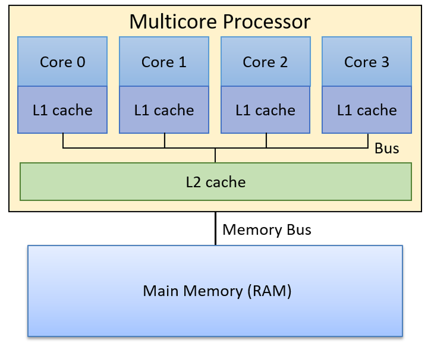

uvm environment for l2 cache

overview
I created a complete UVM-based verification environment for a write-back, multi-core L2 cache tailored to a 32-bit RISC-V system with an AXI4-Lite DRAM interface.
beyond the core cache features, the testbench layers in randomized stimulus, self-checking scoreboards, assertion-driven coverage and flexible configuration options to rigorously exercise coherence and corner-case behavior.
through this project, I mastered advanced SystemVerilog design patterns, deepened my understanding of the AXI4-Lite protocol and gained hands-on experience building end-to-end UVM test environments.
tools
- systemverilog, make, AXI4-Lite, MESI coherence